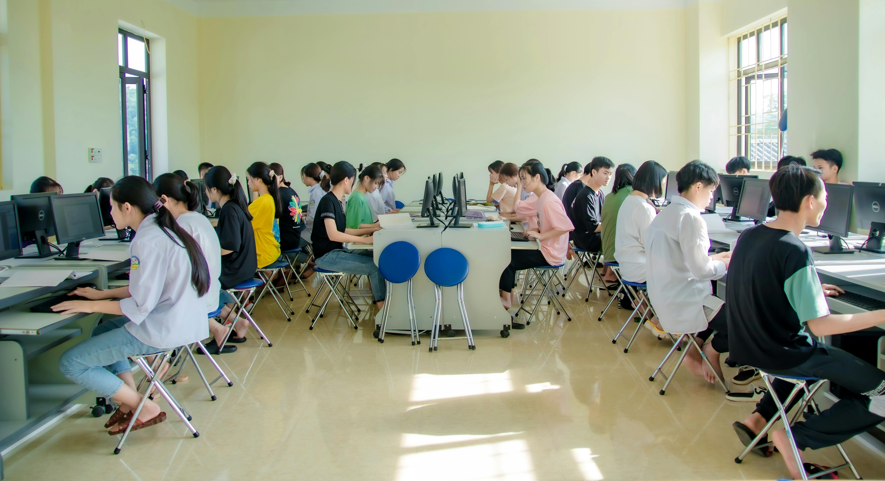
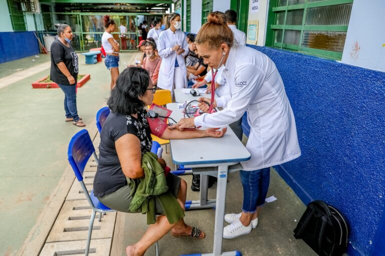

Educação para o Futuro

Oferecemos cursos técnicos e aulas de reforço para mais de 500 alunos anualmente.
Ver Vagas de VoluntariadoConheça os pilares do nosso trabalho e como você pode participar de cada um.

Oferecemos cursos técnicos e aulas de reforço para mais de 500 alunos anualmente.
Ver Vagas de Voluntariado
Foco na prevenção e acesso à informação de saúde para toda a família.
Apoiar ProjetoSua paixão e suas habilidades são o combustível da nossa missão. Temos oportunidades para diversas áreas!
Cada contribuição, grande ou pequena, garante que nossos projetos continuem ativos.